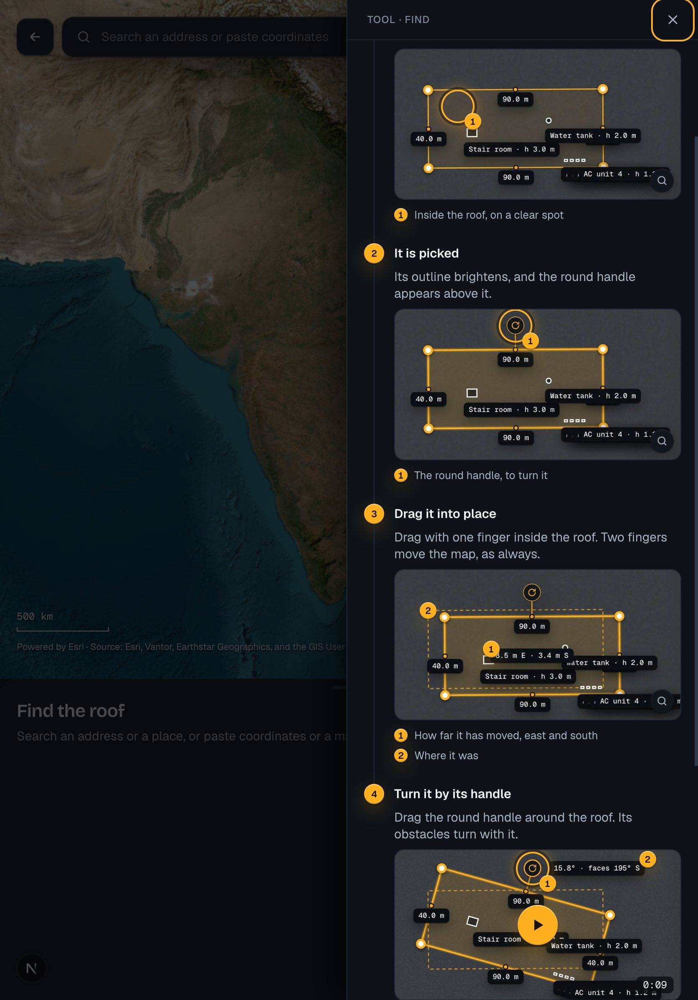
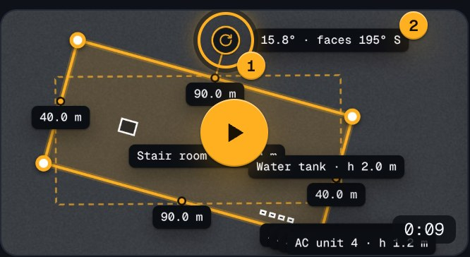
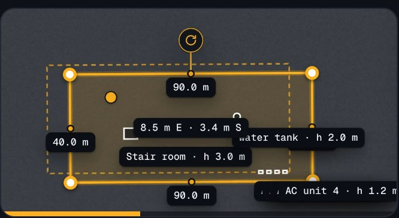
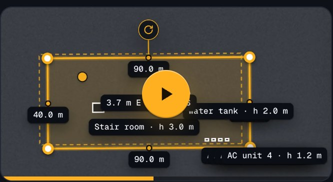
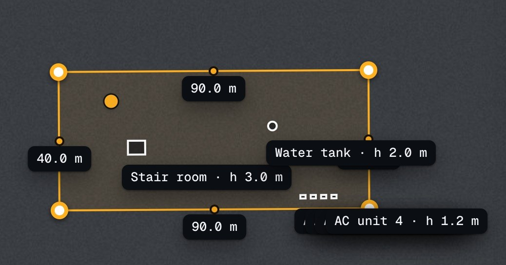
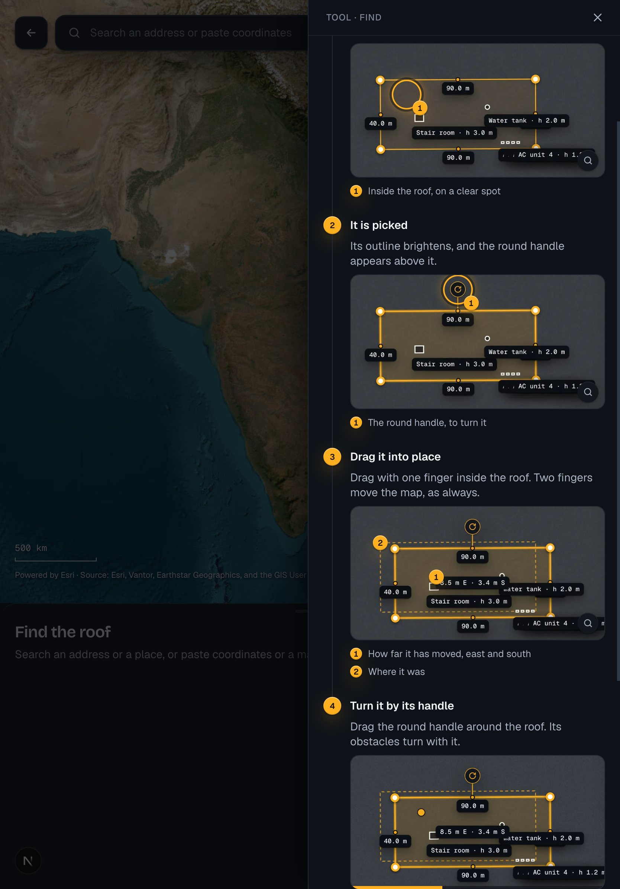

Clips in the help
Phase 15: a step that shows a gesture can play a short clip in its picture's frame, made from the app by a script. Drawn by a prototype in the app with the spike's clip of "Move or turn the roof".
1 · A clip in a step

- 1A step that shows a gesture holds a clip in its picture's frame. At rest it is the step's picture, as before, with a play button of the accent in its middle; nothing of the clip is loaded until it is pressed.
2 · Its states





3 · Playing, on tablet

- 1The same frame in the sheet. On touch a press plays and pauses; the magnifier in its corner opens it at the width of the screen, where it plays as the picture opens large, pinched to look closer.
4 · How a clip behaves, and how it is made
- Never by itself: it plays when pressed, muted (there is no sound), and loops until pressed again or the sheet closes. Under
prefers-reduced-motionit plays once and stops on its last frame. - Every step keeps its picture: a clip is added to a step whose gesture a still shows least (D84: moving and turning the roof, a rectangle, corners, an obstacle). Where a clip cannot play, the picture shows the step.
- Made by a script from the app, as the pictures are (
bun help:clips): the hand's acts at a readable pace, a frame at a time, 30 a second, at twice the pixels; H.264 in MP4 (D83), about 250 kB for 9 s, 500 kB at most a clip and 6 MB in all, beside the pictures (D82). A README beside the run, the guide's "Clips" and a row in CLAUDE.md say how. - A screen reader hears a button, "Play the clip: " and the picture's words, then "Pause the clip"; the step's words say what it shows.